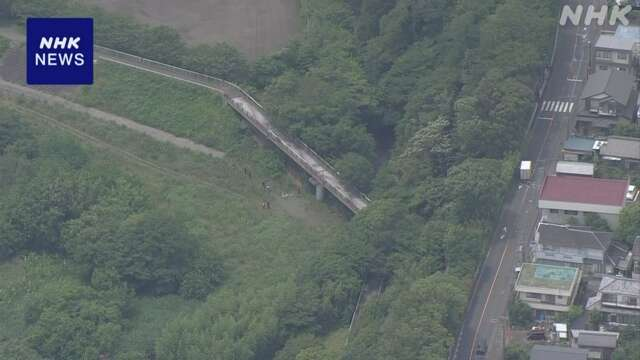

最新ニュース
1️⃣ 神奈川県 高校生を殺した疑いで19歳の男の容疑者を逮捕

11日午前、神奈川県相模原市の川の近くで、女性が亡くなっているのが見つかりました。
警察によると、この人は、神奈川県座間市の17歳の高校生です。
10日の夜、「娘が帰ってこない」と家族から連絡があって、警察がさがしていました。
警察は、この高校生と前につきあっていた19歳の男の容疑者が、亡くなったときのことを知っていると考えて、話を聞いていました。
警察は、11日午後、容疑者が、女性の首を絞めて殺したと話したことから、逮捕しました。何があったか、詳しく調べています。
2️⃣ 熊に人が襲われる被害27人になった
熊に人が襲われる被害が続いています。
NHKの調べによると、今年4月から今月10日までに27人が、熊に襲われました。
福島県で8人、秋田県で5人、岩手県で4人が襲われました。東北地方で被害が多くなっています。
4人が亡くなりました。
そして、襲われた所は、山の中だけではありません。住んでいる家の近くなど、人が生活している所も多くなっています。国は、ごみを家の外に置かないなど、熊が来ないように気をつけてほしいと言っています。
3️⃣ 京都の天橋立 熊が出た
みんなが旅行に行く有名な所にも熊が出ました。
10日の午後4時半ごろ、京都の天橋立で1頭の熊を見た人が警察に連絡しました。
熊は、天橋立を歩いたり、海を泳いだりしたあと、人が住んでいる所に入っていきました。
そして、夜10時半ごろ、林の中にいた熊を、眠くなる薬を銃で撃って、捕まえました。
けがをした人はいませんでした。
熊は、体の長さが1m30cm、体重が97kgのオスのツキノワグマでした。
熊の専門家は「熊は、足が速いだけでなく、広い足の裏を使って泳ぐのも上手です。このような力があるため、人の生活をしている所にも来るのかもしれません」と話しています。
4️⃣ 北海道函館市 スルメイカの初めての競りがあった
北海道の海で、今月初めから「スルメイカ」というイカの漁が始まりました。しかし、ほとんど、とれていません。
11日、やっと函館市の市場で、今年初めての「競り」がありました。競りは、欲しい人たちが競争して、いちばん高い値段を言った人が買います。
船がとってきたスルメイカは、全部で100kgぐらいでした。いつもの年の10％で、ほとんどが小さいスルメイカでした。
競りで、いちばん高かったスルメイカは、1kgが1万2000円でした。去年より、ずっと高くなりました。
漁をしている人は「スルメイカはあまりいませんでした。このようなことが続くと、とても難しいです」と話していました。
- 〜ている / 〜でいる
- 〜によると
- 〜がある / 〜がいる
- 〜から
- 〜こと
- 〜前に
- 〜ことから
- 〜から〜まで
- 〜まで
- 〜までに
- 〜ところ
- 〜中
- 〜だけ
- 〜など
- 〜ように
- 〜ごろ
- 〜後 / 〜あと
- 〜かもしれない / 〜かもしれません
- 〜ような
- 〜ため
- 〜という
- 〜くらい / 〜ぐらい
- 〜ず / 〜ずに
- 〜より
- 〜ても / 〜でも
vebaev.github.io
Generated: 2026-06-11 14:38:51 UTC